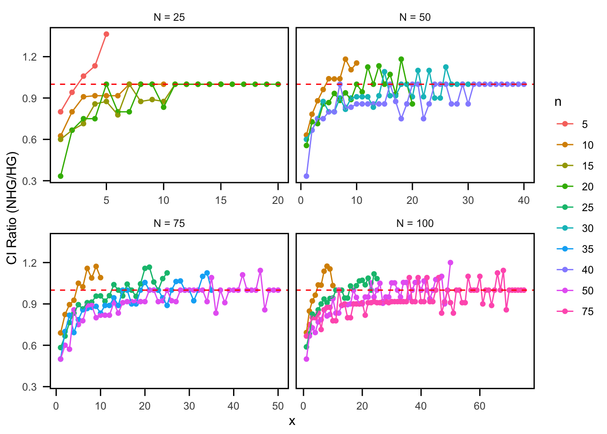
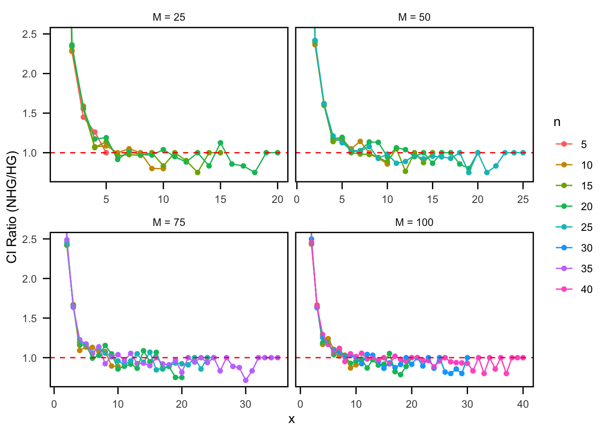

library(extraDistr)
library(tidyverse)
library(data.table)
source('../functions.R', encoding = 'UTF-8')
source('../functions_vec.R', encoding = 'UTF-8')NHG vs HG: Confidence Intervals
Ratio < 1: The NHG intervals are shorter than the HG intervals, meaning NHG is performing better
Ratio > 1: The NHG intervals are longer than the HG intervals, meaning HG is performing better
Set-Up
Hypergeometric Functions (Schilling)
LCO.CI.M <- function(n, N, level) {
# Check that user has asked for a sample size less than or equal to the population size
if (n > N) {
stop("Sample size cannot be greater than population size.")
}
tot.AC <- (n + 1) * (n + 2) / 2 # Total number of acceptance curves
AC.matrix <- matrix(NA, ncol = tot.AC, nrow = (N + 1))
M_seq <- seq(0, N, 1)
# Build ID.matrix that holds the [l, u] values for each column
ID.matrix <- matrix(NA, ncol = 4, nrow = tot.AC)
colnames(ID.matrix) <- c("col", "low", "upp", "span")
column <- 0
for (span in 0:n) {
for (k in 0:(n - span)) {
column <- column + 1
l <- k
u <- k + span
ID.matrix[column, ] <- c(column, l, u, (u - l))
}
}
# Generation of all acceptance curves
for (cols in 1:tot.AC) {
lower <- ID.matrix[ID.matrix[, 1] == cols, 2]
upper <- ID.matrix[ID.matrix[, 1] == cols, 3]
if (lower == upper) {
AC.matrix[, cols] <- dhyper(lower, M_seq, N - M_seq, n)
} else if (lower == 0) {
AC.matrix[, cols] <- phyper(upper, M_seq, N - M_seq, n)
} else {
AC.matrix[, cols] <- phyper(upper, M_seq, N - M_seq, n) -
phyper(lower - 1, M_seq, N - M_seq, n)
}
}
# Create initial cpf by choosing coverage probability from the highest acceptance curve with minimal span
cpf.matrix <- matrix(NA, ncol = 4, nrow = N + 1)
colnames(cpf.matrix) <- c("M", "CovProb", "low", "upp")
for (spot in 1:(N + 1)) {
Q <- 1
J <- 0
while (Q <= ncol(AC.matrix) && J == 0) {
if (isTRUE(all.equal(AC.matrix[spot, Q], level))) {
min.col <- Q
J <- 1
}
Q <- Q + 1
}
if (J == 0) {
min.col <- min(which(AC.matrix[spot, ] >= level))
}
min.span <- ID.matrix[ID.matrix[, 1] == min.col, 4]
span.cols <- ID.matrix[ID.matrix[, 4] == min.span, 1]
cov.prob <- max(AC.matrix[spot, span.cols])
col.covp <- cbind(span.cols, AC.matrix[spot, span.cols])
min.span.col <- min(col.covp[col.covp[, 2] == cov.prob, 1])
x.lower <- ID.matrix[ID.matrix[, 1] == min.span.col, 2]
x.upper <- ID.matrix[ID.matrix[, 1] == min.span.col, 3]
cpf.matrix[spot, ] <- c(spot - 1, cov.prob, x.lower, x.upper)
}
LCO.cpf.matrix <- cpf.matrix
# (Gap Fix code omitted here for brevity; assume it updates LCO.cpf.matrix as in your original code)
# LCO CI Generation
ci.matrix <- matrix(NA, ncol = 3, nrow = n + 1)
colnames(ci.matrix) <- c("x", "lower", "upper")
for (x in 0:n) {
ref.sub <- LCO.cpf.matrix[LCO.cpf.matrix[, 3] <= x & x <= LCO.cpf.matrix[, 4], ]
low.lim <- ref.sub[1, 1]
upp.lim <- ref.sub[nrow(ref.sub), 1]
ci.matrix[x + 1, ] <- c(x, low.lim, upp.lim)
}
# Instead of printing the heading and matrix, return as a data frame
return(as.data.frame(ci.matrix))
}CI.N <- function(n, M, level) {
# Ensure n and M are in the correct order so that the code runs properly
if (M < n) {
swap <- M
M <- n
n <- swap
}
acurve <- function(N) { phyper(0, M, N - M, n) }
ii <- max(M, n)
start <- acurve(ii)
while (start < level) {
start <- acurve(ii)
ii <- ii + 1
}
max_val <- ii - 1
acurve <- function(N) { phyper(1, M, N - M, n) }
ii <- max(M, n)
start <- acurve(ii)
while (start < level) {
start <- acurve(ii)
ii <- ii + 1
}
cutoff.1 <- ii - 2
if ((cutoff.1 + 1 - M) < 1) {
cutoff.1 <- max_val
}
tot.AC <- (n + 1) * (n + 2) / 2 # Total number of acceptance curves
AC.matrix <- matrix(NA, ncol = tot.AC, nrow = (cutoff.1 + 1 - M))
N_seq <- seq(M, cutoff.1, 1)
# Build ID.matrix for [l, u] values in increasing order of span
ID.matrix <- matrix(NA, ncol = 4, nrow = tot.AC)
colnames(ID.matrix) <- c("col", "low", "upp", "span")
column <- 0
for (span in 0:n) {
for (k in 0:(n - span)) {
column <- column + 1
l <- k
u <- k + span
ID.matrix[column, ] <- c(column, l, u, (u - l))
}
}
# Generation of all acceptance curves
for (cols in 1:tot.AC) {
lower <- ID.matrix[ID.matrix[, 1] == cols, 2]
upper <- ID.matrix[ID.matrix[, 1] == cols, 3]
if (lower == upper) {
AC.matrix[, cols] <- dhyper(lower, M, N_seq - M, n)
} else if (lower == 0) {
AC.matrix[, cols] <- phyper(upper, M, N_seq - M, n)
} else {
AC.matrix[, cols] <- phyper(upper, M, N_seq - M, n) -
phyper(lower - 1, M, N_seq - M, n)
}
}
# Create initial cpf by choosing the acceptance curve with minimal span that gives coverage >= level
cpf.matrix <- matrix(NA, ncol = 4, nrow = cutoff.1 + 1 - M)
colnames(cpf.matrix) <- c("N", "CovProb", "low", "upp")
for (spot in 1:(cutoff.1 + 1 - M)) {
min.col <- min(which(AC.matrix[spot, ] >= level))
min.span <- ID.matrix[ID.matrix[, 1] == min.col, 4]
span.cols <- ID.matrix[ID.matrix[, 4] == min.span, 1]
cov.prob <- max(AC.matrix[spot, span.cols])
col.covp <- cbind(span.cols, AC.matrix[spot, span.cols])
min.span.col <- min(col.covp[col.covp[, 2] == cov.prob, 1])
x.lower <- ID.matrix[ID.matrix[, 1] == min.span.col, 2]
x.upper <- ID.matrix[ID.matrix[, 1] == min.span.col, 3]
cpf.matrix[spot, ] <- c((spot - 1 + M), cov.prob, x.lower, x.upper)
}
HG.cpf.matrix <- cpf.matrix
# (Gap Fix code omitted for brevity; assume HG.cpf.matrix is updated accordingly)
# CI Generation
ci.matrix <- matrix(NA, ncol = 3, nrow = n + 1)
colnames(ci.matrix) <- c("x", "lower", "upper")
for (x in 0:n) {
ref.sub <- HG.cpf.matrix[HG.cpf.matrix[, 3] <= x & x <= HG.cpf.matrix[, 4], ]
low.lim <- ref.sub[1, 1]
upp.lim <- ref.sub[nrow(ref.sub), 1]
ci.matrix[x + 1, ] <- c(x, low.lim, upp.lim)
}
# Adjust first two rows as in the original code
ci.matrix[1, 3] <- Inf
ci.matrix[2, 3] <- max_val - 1
# Return the result as a data frame
return(as.data.frame(ci.matrix))
}M Unknown Comparison
Function
M_compare_HG_NHG_CI <- function(n, N, level = 0.95, method = "CG") {
# Compute HG confidence intervals using LCO.CI.M and rename bounds
hg_ci <- LCO.CI.M(n = n, N = N, level = level)
colnames(hg_ci)[colnames(hg_ci) == "lower"] <- "hg_lower"
colnames(hg_ci)[colnames(hg_ci) == "upper"] <- "hg_upper"
hg_ci$hg_length <- hg_ci$hg_upper - hg_ci$hg_lower + 1
# In NHG, m must be at least 1, so remove the row where x == 0.
hg_ci <- subset(hg_ci, x > 0)
# Prepare a list to store corresponding NHG results.
nhg_list <- vector("list", nrow(hg_ci))
for (i in seq_len(nrow(hg_ci))) {
x_hg <- hg_ci$x[i]
m_val <- x_hg # Set NHG m equal to HG observed successes.
# Choose the appropriate NHG function based on the method.
if (method == "CG") {
nhg_ci <- minimal_cardinality_ci_vec(N = N, m = m_val, conf_level = level, procedure = "CG")
} else if (method == "CMC") {
nhg_ci <- cmc_ci_vec(N = N, m = m_val, conf_level = level)
} else {
stop("Invalid method. Please choose 'CG' or 'CMC'.")
}
# According to the mapping: for NHG, the relevant row is where x = n - m.
x_target <- n - m_val
nhg_row <- nhg_ci[nhg_ci$x == x_target, ]
if (nrow(nhg_row) == 0) {
# If no matching row, record NA values.
nhg_result <- data.frame(
x = x_hg,
nhg_lower = NA,
nhg_upper = NA,
nhg_length = NA,
ratio = NA
)
} else {
nhg_lower <- nhg_row$ci_lb[1]
nhg_upper <- nhg_row$ci_ub[1]
nhg_length <- nhg_upper - nhg_lower + 1
# Check for infinite bounds.
if (is.infinite(hg_ci$hg_lower[i]) || is.infinite(hg_ci$hg_upper[i])) {
ratio <- 0
} else if (is.infinite(nhg_lower) || is.infinite(nhg_upper)) {
ratio <- Inf
} else {
ratio <- nhg_length / hg_ci$hg_length[i]
}
nhg_result <- data.frame(
x = x_hg,
nhg_lower = nhg_lower,
nhg_upper = nhg_upper,
nhg_length = nhg_length,
ratio = ratio
)
}
nhg_list[[i]] <- nhg_result
}
nhg_df <- do.call(rbind, nhg_list)
# Merge HG and NHG results by the observed successes (x).
comparison_df <- merge(hg_ci, nhg_df, by = "x", all.x = TRUE)
return(comparison_df)
}CI Comparison using CG (NHG)
Data Collection
# Define the specific combinations in a data frame
combos <- data.frame(
N = c(rep(25, 4), rep(50, 4), rep(75, 4), rep(100, 4)),
n = c(5, 10, 15, 20,
10, 20, 30, 40,
10, 25, 35, 50,
10, 25, 50, 75)
)
# Initialize an empty list to store results for each combination
results_list <- vector("list", nrow(combos))
# Loop over each combination
for (i in 1:nrow(combos)) {
N_val <- combos$N[i]
n_val <- combos$n[i]
# Run the comparison function with method "CG" and 0.95 conf level.
temp <- M_compare_HG_NHG_CI(n = n_val, N = N_val, level = 0.95, method = "CG")
# Add the current combination's N and n to the result
temp$N <- N_val
temp$n <- n_val
# Store in the list
results_list[[i]] <- temp
}
# Combine all results into one data frame
M_final_results <- do.call(rbind, results_list)
# Rearrange columns so that N and n come first
M_final_results <- M_final_results[, c("N", "n", setdiff(names(M_final_results), c("N", "n")))]
# write.csv(M_final_results, file.path("/Users/rachelroggenkemper/Documents/NegativeHypergeometric/Simulation_Comparison", "M_unknown_CI_comp.csv"), row.names = FALSE)Plot
M_unknown_CI_comp <- read_csv(here::here("Simulation_Comparison", "M_unknown_CI_comp.csv"))
N_labels <- c(
"25" = "N = 25",
"50" = "N = 50",
"75" = "N = 75",
"100" = "N = 100"
)
ggplot(M_unknown_CI_comp,
aes(x = x, y = ratio, color = factor(n))) +
geom_point() +
geom_line() +
geom_hline(yintercept = 1, color = "red", linetype = "dashed") +
facet_wrap(~ N, scales = "free_x",
labeller = as_labeller(N_labels)) +
labs(x = "x",
y = "CI Ratio (NHG/HG)",
color = "n") +
theme_minimal() +
theme(
panel.grid.major = element_blank(),
panel.grid.minor = element_blank(),
panel.border = element_rect(color = "black", fill = NA, size = 1),
axis.ticks = element_line(size = 0.5),
axis.ticks.length = unit(2, "mm"),
axis.text.x = element_text(margin = margin(t = 5)),
axis.text.y = element_text(margin = margin(r = 5)))Warning: The `size` argument of `element_line()` is deprecated as of ggplot2 3.4.0.
ℹ Please use the `linewidth` argument instead.Warning: The `size` argument of `element_rect()` is deprecated as of ggplot2 3.4.0.
ℹ Please use the `linewidth` argument instead.
Performance Metrics
M_unknown_CI_comp %>%
mutate(
ratio_cat = case_when(
ratio < 1 ~ "less than 1",
ratio == 1 ~ "exactly 1",
ratio > 1 ~ "greater than 1",
TRUE ~ NA_character_
)
) %>%
group_by(ratio_cat) %>%
summarize(count = n()) %>%
mutate(
percentage = round(100 * count / sum(count), 2)
)# A tibble: 3 × 3
ratio_cat count percentage
<chr> <int> <dbl>
1 exactly 1 115 26.7
2 greater than 1 74 17.2
3 less than 1 241 56.0M_unknown_CI_comp %>%
mutate(
ratio_cat = case_when(
ratio < 0.8 ~ "less than 0.8",
ratio >= 0.8 & ratio < 1 ~ "0.8 to <1",
ratio == 1 ~ "exactly 1",
ratio > 1 & ratio <= 1.2 ~ "1 < ratio <= 1.2",
ratio > 1.2 ~ "greater than 1.2",
TRUE ~ NA_character_
)
) %>%
group_by(ratio_cat) %>%
summarize(count = n()) %>%
mutate(
percentage = round(100 * count / sum(count), 2)
)# A tibble: 5 × 3
ratio_cat count percentage
<chr> <int> <dbl>
1 0.8 to <1 191 44.4
2 1 < ratio <= 1.2 73 17.0
3 exactly 1 115 26.7
4 greater than 1.2 1 0.23
5 less than 0.8 50 11.6 N Unknown Comparison
Function
N_compare_HG_NHG_CI <- function(n, M, level = 0.95, method = "CG") {
# Compute HG confidence intervals (for N unknown) using CI.N
hg_ci <- CI.N(n = n, M = M, level = level)
# Rename bounds for clarity
colnames(hg_ci)[colnames(hg_ci) == "lower"] <- "hg_lower"
colnames(hg_ci)[colnames(hg_ci) == "upper"] <- "hg_upper"
hg_ci$hg_length <- hg_ci$hg_upper - hg_ci$hg_lower + 1
# In NHG, m must be at least 1; so remove the row where x == 0.
hg_ci <- subset(hg_ci, x > 0)
# Prepare a list to store NHG results
nhg_list <- vector("list", nrow(hg_ci))
for (i in seq_len(nrow(hg_ci))) {
x_hg <- hg_ci$x[i]
m_val <- x_hg # set NHG m equal to the HG observed successes
if (m_val == 1) {
current_max_N <- 10
} else {
# Compute max_N for the NHG call based on the current HG upper bound
current_max_N <- min(ceiling(hg_ci$hg_upper[i] * 3), 1000)
}
# Choose the appropriate NHG function based on the method argument
if (method == "CG") {
nhg_ci <- minimal_cardinality_ci_N_unkown_vec(M = M, m = m_val,
conf_level = level,
max_N = current_max_N,
procedure = "CG")
} else if (method == "CMC") {
nhg_ci <- cmc_ci_N_unkown_vec(M = M, m = m_val,
conf_level = level,
max_N = current_max_N)
} else {
stop("Invalid method. Please choose either 'CG' or 'CMC'.")
}
# Mapping: for NHG, choose the row where x equals n - m
x_target <- n - m_val
nhg_row <- nhg_ci[nhg_ci$x == x_target, ]
if (nrow(nhg_row) == 0) {
# If no matching row, record NA values.
nhg_result <- data.frame(
x = x_hg,
nhg_lower = NA,
nhg_upper = NA,
nhg_length = NA,
ratio = NA
)
} else {
nhg_lower <- nhg_row$ci_lb[1]
nhg_upper <- nhg_row$ci_ub[1]
nhg_length <- nhg_upper - nhg_lower + 1
# Check for infinite bounds; if any HG bound is Inf or -Inf, set ratio = 0;
# if any NHG bound is infinite, set ratio = 1.
if (is.infinite(hg_ci$hg_lower[i]) || is.infinite(hg_ci$hg_upper[i])) {
ratio <- 0
} else if (is.infinite(nhg_lower) || is.infinite(nhg_upper)) {
ratio <- Inf
} else {
ratio <- nhg_length / hg_ci$hg_length[i]
}
nhg_result <- data.frame(
x = x_hg,
nhg_lower = nhg_lower,
nhg_upper = nhg_upper,
nhg_length = nhg_length,
ratio = ratio
)
}
nhg_list[[i]] <- nhg_result
}
nhg_df <- do.call(rbind, nhg_list)
# Merge HG and NHG results by the observed successes (x)
comparison_df <- merge(hg_ci, nhg_df, by = "x", all.x = TRUE)
return(comparison_df)
}CI Comparison using CG (NHG)
Data Collection
Sys.time()
library(pbmcapply) # provides pbmclapply()
library(parallel) # for detectCores()
# Number of cores to use (e.g., all but 1 to keep system responsive)
num_cores <- detectCores() - 1
# Define the specific combinations in a data frame
combos <- data.frame(
M = c(rep(25, 4), rep(35, 4), rep(45, 4), rep(55, 4)),
n = c(5, 10, 15, 20,
10, 15, 20, 25,
10, 20, 25, 35,
10, 20, 30, 40)
)
# Parallelize the process with a progress bar:
results_list <- pbmclapply(
X = 1:nrow(combos),
FUN = function(i) {
M_val <- combos$M[i]
n_val <- combos$n[i]
# Run the comparison function with method "CG" and 0.95 conf level.
temp <- N_compare_HG_NHG_CI(
n = n_val,
M = M_val,
level = 0.80,
method = "CG"
)
# Add the current combination's M and n to the result
temp$M <- M_val
temp$n <- n_val
return(temp)
},
mc.cores = num_cores
)
# Combine all results into one data frame
N_final_results <- do.call(rbind, results_list)
# Rearrange columns so that M and n come first
N_final_results <- N_final_results[, c("M", "n", setdiff(names(N_final_results), c("M", "n")))]
# View the final results (optional)
head(N_final_results)
Sys.time()
# write.csv(N_final_results, file.path("/Users/rachelroggenkemper/Documents/NegativeHypergeometric/Simulation_Comparison", "N_unknown_CI_comp.csv"), row.names = FALSE)N_final_results <- read_csv(here::here("Simulation_Comparison", "N_unknown_CI_comp.csv"))
N_unknown_CI_comp_NA <- read_csv(here::here("Simulation_Comparison",
"N_unknown_CI_comp_NA.csv"))
N_unknown_CI_comp_NA$nhg_length <- (N_unknown_CI_comp_NA$nhg_upper - N_unknown_CI_comp_NA$nhg_lower + 1)
N_unknown_CI_comp_NA$ratio <- (N_unknown_CI_comp_NA$nhg_length / N_unknown_CI_comp_NA$hg_length)
N_final_results_updated <- rows_update(
N_final_results,
N_unknown_CI_comp_NA,
by = c("M", "n", "x")
)
write.csv(N_final_results_updated, file.path("/Users/rachelroggenkemper/Documents/NegativeHypergeometric/Simulation_Comparison", "N_unknown_CI_comp_updated.csv"),
row.names = FALSE)Plot
N_unknown_CI_comp <- read_csv(here::here("Simulation_Comparison",
"N_unknown_CI_comp_updated.csv"))
N_unknown_CI_comp <- N_unknown_CI_comp %>%
mutate(ratio = if_else(is.na(ratio), 10, ratio))M_labels <- c(
"25" = "M = 25",
"35" = "M = 50",
"45" = "M = 75",
"55" = "M = 100"
)
ggplot(N_unknown_CI_comp,
aes(x = x, y = ratio, color = factor(n))) +
geom_point() +
geom_line() +
geom_hline(yintercept = 1, color = "red", linetype = "dashed") +
coord_cartesian(ylim = c(min(N_unknown_CI_comp$ratio), 2.5)) +
facet_wrap(~ M, scales = "free_x",
labeller = as_labeller(M_labels)) +
labs(x = "x",
y = "CI Ratio (NHG/HG)",
color = "n") +
theme_minimal() +
theme(
panel.grid.major = element_blank(),
panel.grid.minor = element_blank(),
panel.border = element_rect(color = "black", fill = NA, size = 1),
axis.ticks = element_line(size = 0.5),
axis.ticks.length = unit(2, "mm"),
axis.text.x = element_text(margin = margin(t = 5)),
axis.text.y = element_text(margin = margin(r = 5)))
Performance Metrics
N_unknown_CI_comp %>%
mutate(
ratio_cat = case_when(
ratio < 1 ~ "less than 1",
ratio == 1 ~ "exactly 1",
ratio > 1 ~ "greater than 1",
TRUE ~ NA_character_
)
) %>%
group_by(ratio_cat) %>%
summarize(count = n()) %>%
mutate(
percentage = round(100 * count / sum(count), 2)
)# A tibble: 3 × 3
ratio_cat count percentage
<chr> <int> <dbl>
1 exactly 1 53 17.1
2 greater than 1 133 42.9
3 less than 1 124 40 N_unknown_CI_comp %>%
mutate(
ratio_cat = case_when(
ratio < 0.9 ~ "less than 0.9",
ratio >= 0.9 & ratio < 1 ~ "0.9 to <1",
ratio == 1 ~ "exactly 1",
ratio > 1 & ratio <= 1.5 ~ "1 < ratio <= 1.5",
ratio >= 1.5 & ratio <= 2.5 ~ "1.5 <= ratio <= 2.5",
ratio > 2.5 ~ "greater than 2.5",
TRUE ~ NA_character_
)
) %>%
group_by(ratio_cat) %>%
summarize(count = n()) %>%
mutate(
percentage = round(100 * count / sum(count), 2)
)# A tibble: 6 × 3
ratio_cat count percentage
<chr> <int> <dbl>
1 0.9 to <1 65 21.0
2 1 < ratio <= 1.5 86 27.7
3 1.5 <= ratio <= 2.5 31 10
4 exactly 1 53 17.1
5 greater than 2.5 16 5.16
6 less than 0.9 59 19.0